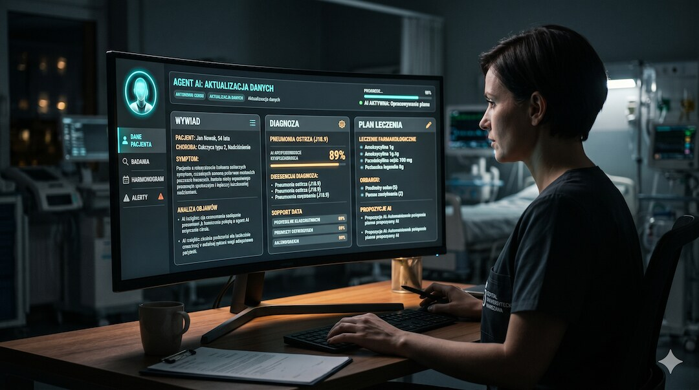
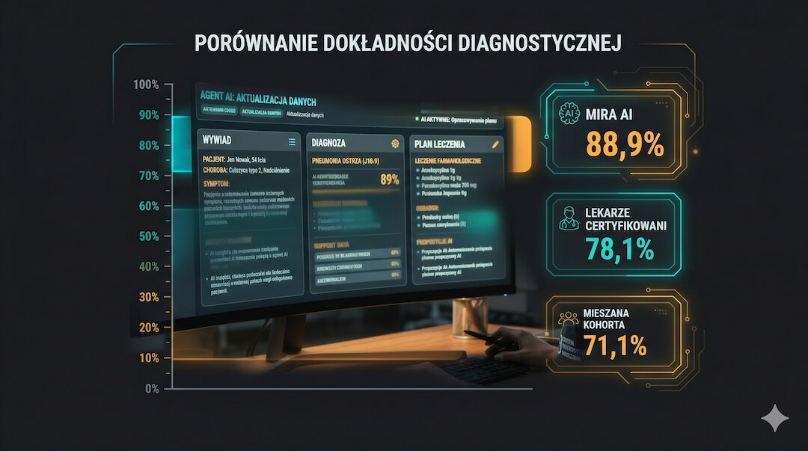
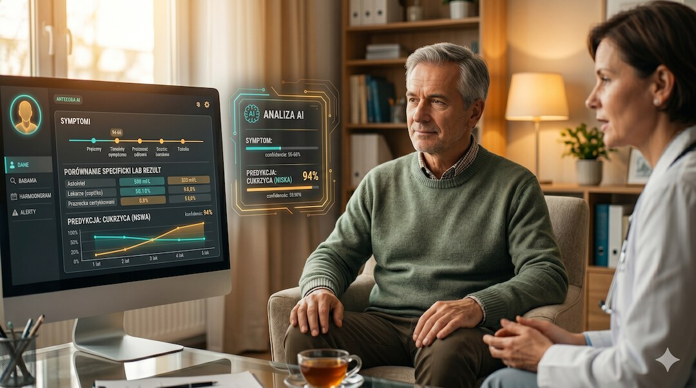
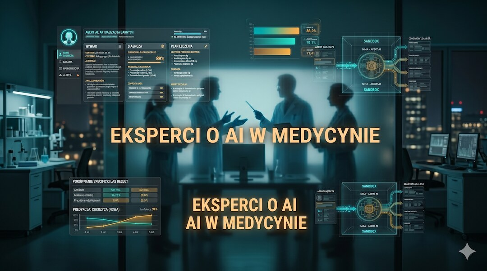
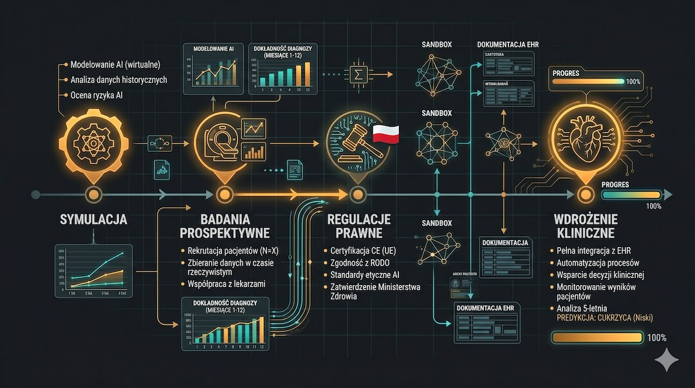

W czerwcu 2026 roku w Nature ukazało się badanie autonomicznego agenta AI o nazwie MIRA. System przeprowadzał symulowane wywiady, zamawiał badania i stawiał diagnozy na podstawie 574 archiwalnych przypadków z izby przyjęć – i w tym kontrolowanym teście wypadł lepiej niż doświadczeni lekarze. Co ten wynik naprawdę oznacza dla przyszłości medycyny i dla nas, pacjentów?
Szybka odpowiedź
MIRA osiągnęła 88,9% trafności diagnostycznej w symulacji 574 archiwalnych przypadków, a w bezpośrednim porównaniu 87,8% wobec 78,1% u certyfikowanych lekarzy, ale nie oznacza to gotowości do samodzielnego leczenia na SOR-ze, ponieważ system pracował w sandboxie, nie badał prawdziwych pacjentów i zlecał wyraźnie więcej badań krwi; jeśli trafi do kliniki, najpierw wymaga badań prospektywnych oraz nadzoru lekarza.
Kluczowe wnioski
- MIRA osiągnęła 88,9% trafności diagnostycznej na 574 archiwalnych przypadkach z ośmiu grup rozpoznań.
- W bezpośrednim porównaniu na 311 przypadkach MIRA uzyskała 87,8%, a certyfikowani lekarze 78,1% trafności.
- System działał w sandboxie EHR z symulowanym pacjentem; nie diagnozował ani nie leczył ludzi w czasie rzeczywistym.
- MIRA zlecała wyraźnie więcej badań krwi, dlatego przed wdrożeniem potrzebne są prospektywne badania kliniczne i nadzór lekarza.
Czym jest MIRA i czym różni się od chatbota?
Kiedy słyszymy „AI w medycynie”, większość z nas wyobraża sobie chatbota odpowiadającego na pytania o objawy. MIRA to autonomiczny agent – system, który w symulacji prowadzi wywiad, analizuje wyniki badań, stawia diagnozę i układa plan leczenia , łącznie z decyzją o przyjęciu do szpitala lub wypisie. O tym, jak takie narzędzia mogą wspierać personel, pisaliśmy też w artykule o AI w medycynie i bezpieczeństwie pacjentów .
Badacze uruchomili MIRĘ na 574 archiwalnych przypadkach klinicznych z bazy MIMIC-IV – anonimowych danych z rzeczywistej izby przyjęć. System miał do dyspozycji ponad 85 000 możliwych działań i 11 narzędzi cyfrowych. Mógł zamawiać badania, zlecać obrazowanie, przeglądać historię choroby i proponować leczenie – wszystko w kontrolowanym środowisku testowym.
Najważniejsza różnica wobec prostych chatbotów: MIRA nie dostawała gotowej listy objawów. Musiała sama zadawać pytania symulowanemu pacjentowi, wydobywać informacje i podejmować kolejne decyzje na podstawie odpowiedzi oraz dokumentacji.

Jak MIRA wypadła w porównaniu z lekarzami?
Wyniki badania są bezprecedensowe – i warto je chwilę pooglądać, zanim zaczniemy interpretować. Na pełnym zbiorze 574 przypadków MIRA osiągnęła 88,9% trafności diagnostycznej . W bezpośrednim starciu z lekarzami – na identycznych 311 przypadkach – agent AI uzyskał 87,8%, podczas gdy certyfikowani specjaliści osiągnęli średnio 78,1% (p < 0,001), a mieszana kohorta lekarzy różnych szczebli – 71,1%.
W bezpośrednim porównaniu różnica wyniosła 9,7 punktu procentowego i była istotna statystycznie. System oceniano w ośmiu grupach rozpoznań: od zapalenia wyrostka, przez zapalenie płuc, po raka trzustki. Wyniki nie były jednak jednakowe dla każdej choroby, dlatego średnia nie opisuje całej jakości działania systemu.
Jest też ważne zastrzeżenie: MIRA obejmowała zleceniami około 51,1% badań krwi udokumentowanych w bazie, a certyfikowani lekarze 28,3%. Szersze zbieranie danych mogło częściowo zwiększać trafność. Jeśli chcesz lepiej rozumieć znaczenie takich wyników, zobacz poradnik o tym, jak często wykonywać badania krwi po 50-tce.
- 88,9% trafności diagnostycznej MIRY na 574 przypadkach
- 87,8% vs. 78,1% lekarzy certyfikowanych na 311 przypadkach – różnica istotna statystycznie (p < 0,001)
- 71,1% – trafność mieszanej grupy lekarzy różnych szczebli
- 85 000+ możliwych działań operacyjnych dostępnych dla agenta
- 8 kategorii diagnoz: od chirurgii, przez internę, po onkologię

Jak działał eksperyment? Co było testem, a co rzeczywistością?
Zanim damy się ponieść entuzjazmowi, warto zrozumieć, jak wyglądał eksperyment. MIRA działała w sandboxie – izolowanym, wirtualnym środowisku dokumentacji medycznej zgodnym ze standardem HL7 FHIR. System miał dostęp do danych pacjentów, ale nie leczył żadnego prawdziwego człowieka w czasie rzeczywistym . Rolę pacjenta pełnił oddzielny agent AI, który odpowiadał na pytania MIRY wyłącznie na podstawie autentycznych historii klinicznych.
Badacze wskazują kilka ważnych ograniczeń. Mowa symulowanego pacjenta jest bardziej ustrukturyzowana niż prawdziwa rozmowa na SOR-ze, gdzie pacjent bywa przestraszony lub przekazuje niepełne informacje. MIRA była też systemem tekstowym: nie widziała twarzy pacjenta, nie słyszała jego oddechu i nie mogła go zbadać. Także badania obrazowe, takie jak RTG, TK i MRI, w praktyce wymagają szerszego kontekstu klinicznego.
Co to zmienia dla pacjenta po pięćdziesiątce?
Po pięćdziesiątce częściej współistnieje kilka chorób, a objawy takie jak ból w klatce piersiowej, duszność czy zawroty głowy mogą mieć różne przyczyny. Lekarz musi szybko odróżnić stany nagłe od mniej groźnych. Dodatkowe narzędzie porządkujące dane i sprawdzające decyzję może być pomocne, ale badanie MIRY nie dowodzi jeszcze poprawy wyników leczenia. Jedną z trudnych przyczyn duszności opisujemy w poradniku o niewydolności serca HFpEF .
Nie chodzi o zastąpienie lekarza przy łóżku. System mógłby pełnić rolę dodatkowego narzędzia, które konsekwentnie przegląda dokumentację i podpowiada możliwości diagnostyczne. Wyniki MIRY uzasadniają dalsze badania takiego wsparcia, ale nie pozwalają jeszcze obiecać mniejszej liczby błędów ani krótszego oczekiwania na diagnozę.
Wyniki różniły się zależnie od rozpoznania. MIRA osiągała najwyższą trafność w zapaleniu wyrostka, a niższą w zapaleniu płuc i zakażeniach dróg moczowych. To ważne przypomnienie, że jedna średnia nie mówi, jak system poradzi sobie z konkretnym pacjentem.
- Możliwa rola: dodatkowe narzędzie wspierające decyzję lekarza, a nie samodzielny zastępca
- Możliwa korzyść: systematyczne przeglądanie wyników i historii choroby
- Warunek bezpieczeństwa: testy prospektywne na prawdziwych pacjentach
- Niewiadoma: wpływ na liczbę błędów, czas diagnozy, koszty i wyniki leczenia

Co mówią eksperci o AI w medycynie?
Środowisko naukowe przyjęło wyniki MIRY z zainteresowaniem, ale także z ostrożnością. Niezależne komentarze do badania MIRA i równolegle opublikowanego systemu AMIE podkreślają, że są to wyniki wstępne, które nie odzwierciedlają całej złożoności codziennej praktyki klinicznej. Oba systemy pracowały głównie na tekście, a medycyna obejmuje również badanie fizykalne, obserwację i relację z pacjentem.
Niezależni eksperci z Science Media Centre wskazali, że dla zapalenia płuc i zakażeń dróg moczowych różnica między AI a lekarzami była najmniejsza. Powróciła też kwestia liczby zlecanych badań. Czy lepsza trafność wynika z lepszego rozumowania, szerszego zbierania danych, czy obu tych elementów? To pytanie nadal wymaga badań.

Co musi się wydarzyć, zanim AI trafi na prawdziwy SOR?
Autorzy badania są jednoznaczni: symulacja to dopiero pierwszy krok. Zanim MIRA lub podobny system trafi do prawdziwego szpitala, musi przejść przez prospektywne badania kliniczne – eksperymenty prowadzone w czasie rzeczywistym, na żywych pacjentach, z pełną kontrolą bezpieczeństwa. W medycynie taki proces trwa latami – i dobrze, że tak jest.
Konieczne będą też ramy prawne i etyczne: kto odpowiada za błąd AI? Jak pacjent ma wiedzieć, że system uczestniczy w diagnozie? Jak ograniczyć ryzyko nierównego działania w grupach słabiej reprezentowanych w danych? To warunki, które trzeba spełnić przed wdrożeniem, podobnie jak zasady bezpiecznego używania danych i właściwej interpretacji markerów krwi.
Kolejnym krokiem może być łączenie AI z obrazowaniem, danymi z urządzeń ubieralnych i obserwacją pacjenta. Więcej danych nie gwarantuje jednak lepszej decyzji: system musi umieć oceniać ich jakość, sygnalizować niepewność i pozostawiać lekarzowi możliwość kontroli oraz odrzucenia rekomendacji.

Zobacz też: ai w medycynie czy naprawde pomaga pacjentom fakty badania.
Najczęściej zadawane pytania
Czy MIRA leczyła prawdziwych pacjentów?
Nie. MIRA działała wyłącznie w sandboxie – wirtualnym środowisku dokumentacji medycznej. Testowano ją na archiwalnych danych z bazy MIMIC-IV, a rolę pacjenta odgrywał oddzielny agent AI. Żaden prawdziwy pacjent nie był diagnozowany przez system w tym badaniu.
Jaką trafność diagnostyczną osiągnęła MIRA w porównaniu z lekarzami?
Na 574 archiwalnych przypadkach MIRA uzyskała 88,9% trafności. W bezpośrednim porównaniu z certyfikowanymi lekarzami na 311 przypadkach osiągnęła 87,8%, podczas gdy lekarze – 78,1%. Różnica wyniosła 9,7 punktu procentowego i była istotna statystycznie (p < 0,001).
Dlaczego MIRA zamawiała więcej badań niż lekarze?
MIRA obejmowała zleceniami około 51,1% badań krwi udokumentowanych w bazie, a certyfikowani lekarze 28,3%. Szersze zbieranie danych mogło częściowo wyjaśniać wyższą trafność, więc wynik nie musi być wyłącznie efektem lepszego rozumowania klinicznego.
Jakie są zagrożenia AI w medycynie?
Najważniejsze ryzyka to błędna rekomendacja, nadmierne zlecanie badań, stronniczość danych, brak przejrzystości decyzji oraz niejasna odpowiedzialność za błąd. Dochodzą do tego prywatność dokumentacji i możliwość nadmiernego zaufania do systemu. Dlatego potrzebne są badania prospektywne, audyty i kontrola lekarza.
Czy AI w medycynie zastąpi lekarzy?
Obecne badanie wspiera rolę AI jako narzędzia pomagającego lekarzom, a nie dowód na możliwość ich zastąpienia. MIRA nie widziała pacjenta, nie słyszała jego oddechu i nie mogła wykonać badania fizykalnego. Samodzielne leczenie bez nadzoru nie zostało tu sprawdzone.
Źródła
- Dyke Ferber et al., Towards autonomous medical artificial intelligence agents, Nature 2026
- Science Media Centre: Expert reaction to MIRA and AMIE, 2026
- PubMed: MIMIC-IV, a freely accessible electronic health record dataset
- PubMed: Evaluation and mitigation of large language model limitations in clinical decision-making
- Liévin V. et al., Towards Conversational AI for Disease Management (AMIE), Nature 2026
- PubMed: When combinations of humans and AI are useful – systematic review and meta-analysis
- WHO: Ethics and governance of artificial intelligence for health
Uwaga: Artykuł ma charakter informacyjny i edukacyjny. Nie zastępuje konsultacji lekarskiej, diagnozy ani leczenia.